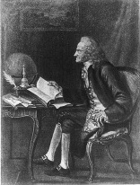

Candide (1759) kısa romanı, Avrupa’yı yaklaşık olarak 1650’den 1800’e kadar savuran entelektüel ve akılcı bir akım olan Aydınlanma’nın en büyük satirik eseridir. Voltaire mahlasıyla daha iyi tanınan François-Marie Arouet’in yazdığı Candide dini, Aristokrasiyi ve pek çok Aydınlanma filozofunun fikirlerini şişe geçirdi.

Aydınlanma, kafa karıştırıcı bir dizi şöhretli yazar ve düşünür çıkardı. Ancak hiçbiri Voltaire (1694-1778) kadar delip geçen bir zekaya veya keskin göze sahip değildi. Paris’te doğan Voltaire, erken yaşlarından itibaren parodi yeteneğini sergiledi. Filozoflar olarak bilinen diğer entelektüellerle Paris salonlarında sık sık görülen Voltaire, akılcılığı benimsemişti ve köklü dini ve siyasi kurumlara saldırmıştı. Cüretkarlığı, Orleans Dükü’nü öfkelendirmesi yüzünden yirmili yaşlarının başında Voltaeire’in başına dert oldu. Sürgüne gönderildi ve bir süre sonra Paris’e dönünce hapse atıldı. 1726’da İngiltere’ye yine bir sürgüne gönderilmeden önce tekrar hapse atıldı.
Oyunlar, romanlar ve makalelerle dolu, bereketli bir otuz yıldan sonra Voltaire, günümüzde de meşhur olan komedi eserini Candide’i kaleme aldı. Esere adını veren baş karakteri, Alman bir baronun evinde yetişen aşırı derecede naif genç bir adamdır. İçinde yaşadıkları dünyanın “olası tüm dünyaların en iyisi” olduğuna kuvvetle inanan hocası Dr. Pangloss tarafından eğitilir. Baronun, Candide’i kızı Cunegonde’ye âşık olduğu için evinden kovmasından sonra, Candide tüm Avrupa’yı dolaşır. Bir dizi gülünç zorluklar ve acı olaylar birbirini takip eder. Cunegonde, ailesinin göçebe yağmacı Bulgar bir topluluk tarafından öldürülüşünü görür ve sonra seks kölesi olarak satılır, Pangloss’a frengi bulaşır ve ardından asılarak idam edilir, bir deprem Lizbon kentini dümdüz eder ve Candide tekrar tekrar kırbaçlanır. Yine de hem kendisinin hem de hocasının kör bir şekilde “her şeyin en iyisinin gerçekleştiğine” inandıkları iyimser dünya bakış açılarına sadık kalırlar.
Candide, Voltaire’in çağdaşı ve iyimserliği ile bilinen Gottfried Wilhelm Leibniz’in (1646-1716) felsefesine acımasız bir dokundurmadır. Voltaire o kadar da kötümser olmamasına rağmen, Leibniz’in inançlarını – dünya gerçekliğini görmezden gelen başıboş felsefi bir kurgu –aptallığa varacak kadar iyimser bulmuştu. Bu doğrultuda, Voltaire’in romanının sonunda Candide, fikirlerinin bir açıklamasını verir ve Pangloss’un öğretilerini reddeder. Bunun yerine, başarıya ulaşma yolunun “herkesin kendi bahçesini ekmesi” olduğuna, başka bir deyişle, elle tutulur bir fayda yaratan pratik işlere dahil olmaya karar verir.
EK BİLGİLER:
1. Voltaire, Büyük Frederick’ten Jonathan Swift’e, Büyük Catherine’den Kazanova’ya kadar birçok Avrupalı aydını arkadaşları ve tanıdıkları arasında saymıştır.
2. Amerikalı besteci Leonard Berstein, 1956’da Candide’i komik bir operete uyarladı. Operet hâlâ beğeniyle sık sık sahnelenmektedir.